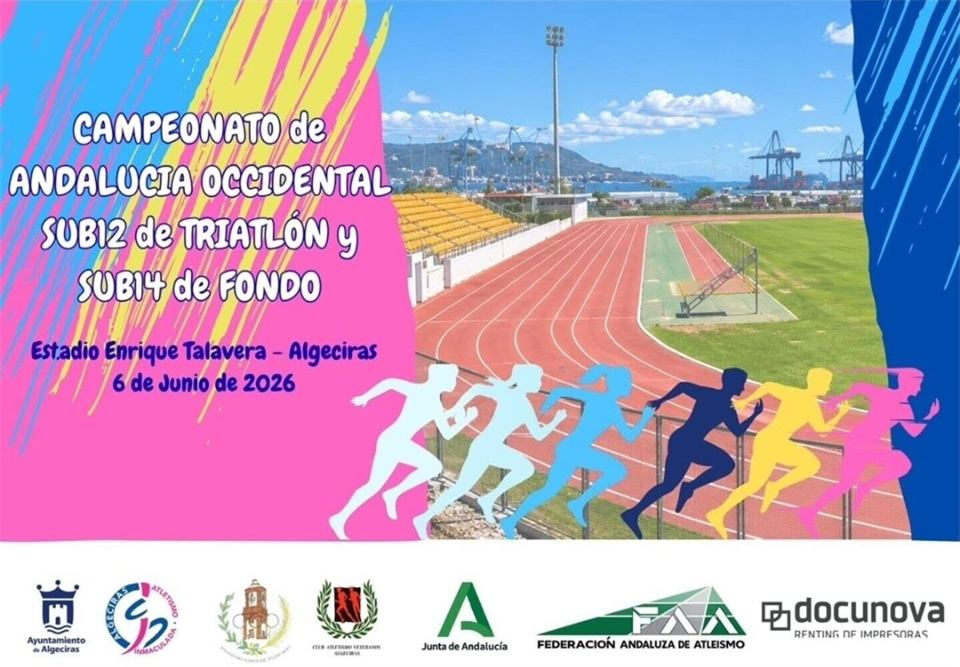
Competiciones
Gran actuación en Algeciras
Fabiola Morazza, Ana Medina y Miguel Vázquez representaron al club en el Andaluz Sub-12 logrando varias mejores marcas personales.
Leer másExplora nuestras publicaciones
Descubre las últimas competiciones, entrenamientos, eventos y novedades del club.

Competiciones
Fabiola Morazza, Ana Medina y Miguel Vázquez representaron al club en el Andaluz Sub-12 logrando varias mejores marcas personales.
Leer más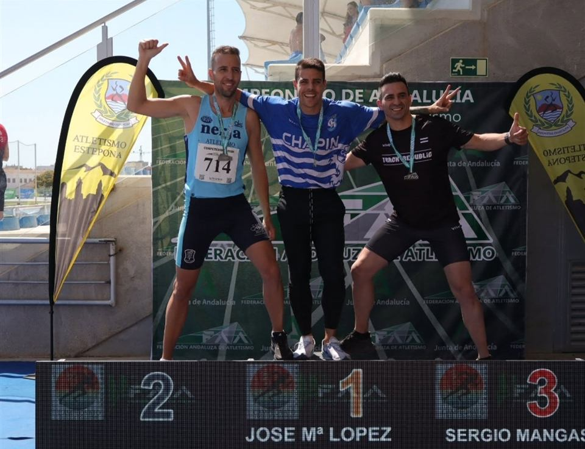
Competiciones
Nuestros atletas máster lograron una gran cosecha de medallas en el Andaluz de Estepona, con el 100% de los participantes en el podio.
Leer más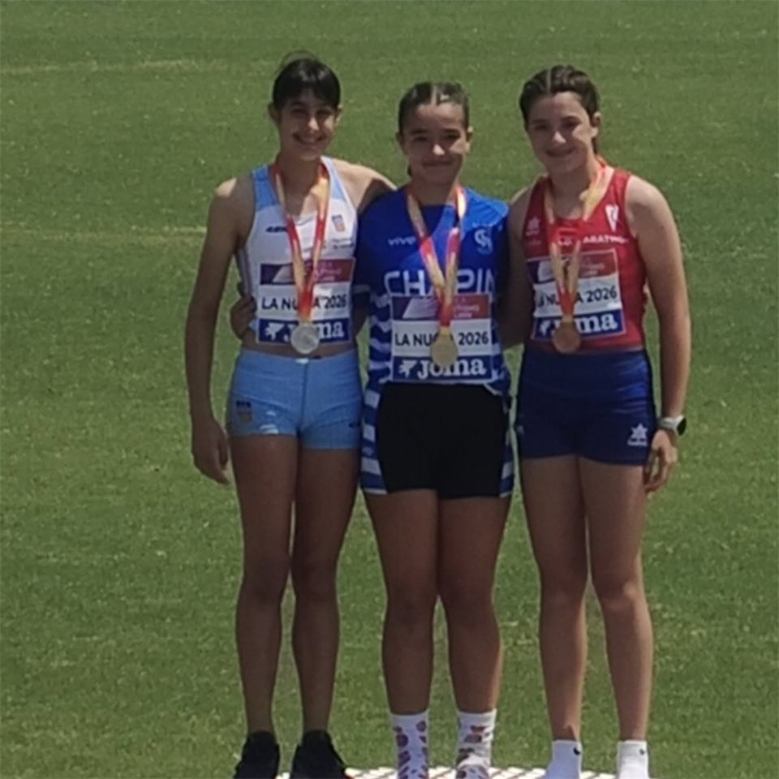
Competiciones
Alejandra Orozco se proclamó campeona de España Sub-14 con récord del campeonato, mientras que Miguel Vázquez y Álvaro Benítez firmaron grandes marcas.
Leer más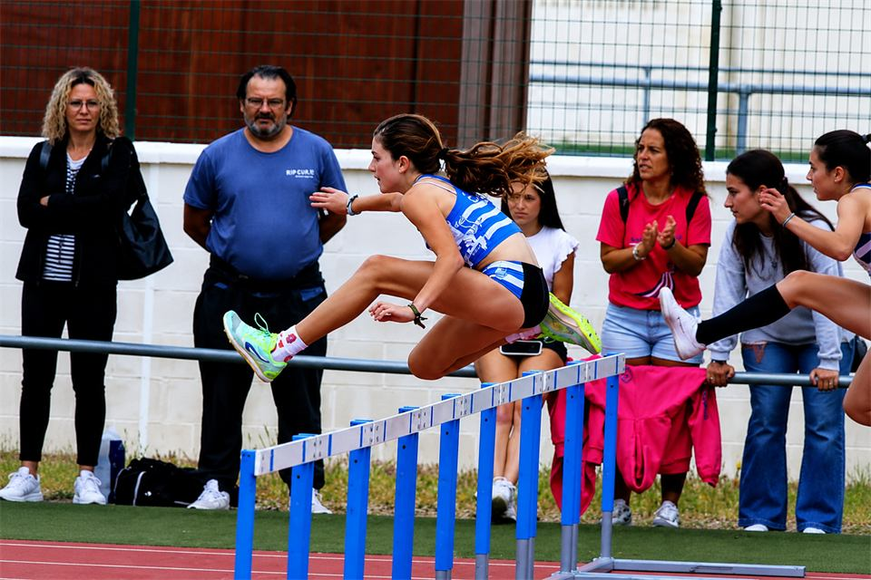
Competiciones
El equipo femenino se proclamó campeón y ascendió a Primera División Andaluza, y el masculino completó una gran séptima posición.
Leer másActualidad del club
Actualizaciones, competiciones y resultados del club.
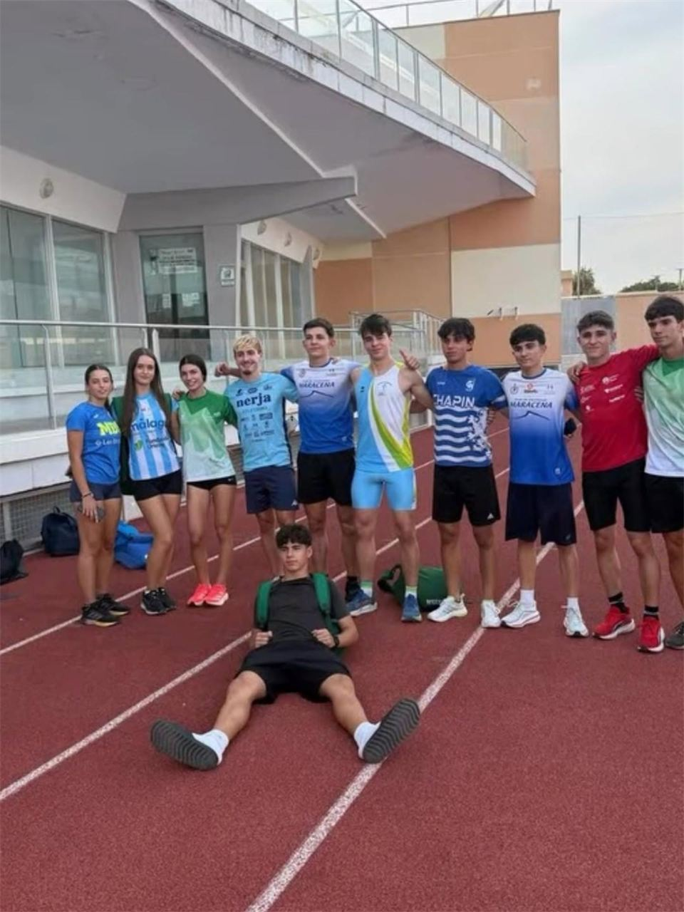
Competiciones
El atleta del club fue convocado, junto a su entrenador José María Moreno Sánchez, a las jornadas de tecnificación PNTD.
El atleta del club Raúl Sánchez Bernal ha sido convocado, junto a su entrenador José María Moreno Sánchez, en las jornadas PNTD de velocidad corta. Disfrutaron de un gran día entre atletas y entrenadores, en unas jornadas de tecnificación junto a los mejores velocistas de Andalucía.
Enhorabuena a ambos por el trabajo realizado.
Entrenamientos
A partir del lunes 21 de septiembre empezamos con el horario de invierno.
A partir del lunes 21 de septiembre empezamos con el horario de invierno. Consulta los horarios en la portada o en el cartel oficial.
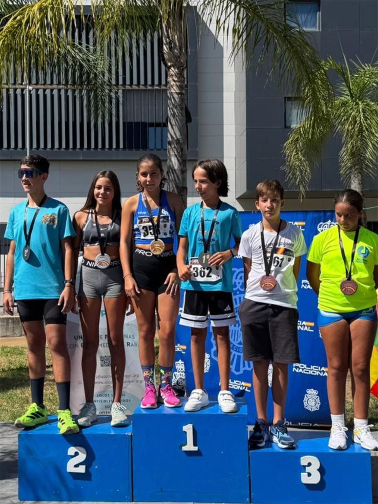
Competiciones
Aún en pretemporada, varios atletas del club participaron este domingo con muy buenos resultados.
Aún en periodo de pretemporada, algunos de nuestros atletas participaron este domingo en la Carrera Santo Ángel de la Policía Nacional, con muy buenos resultados. Enhorabuena a los participantes de todas las pruebas y ahora, a preparar la siguiente.
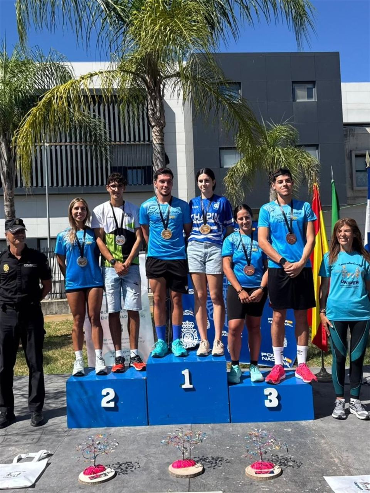
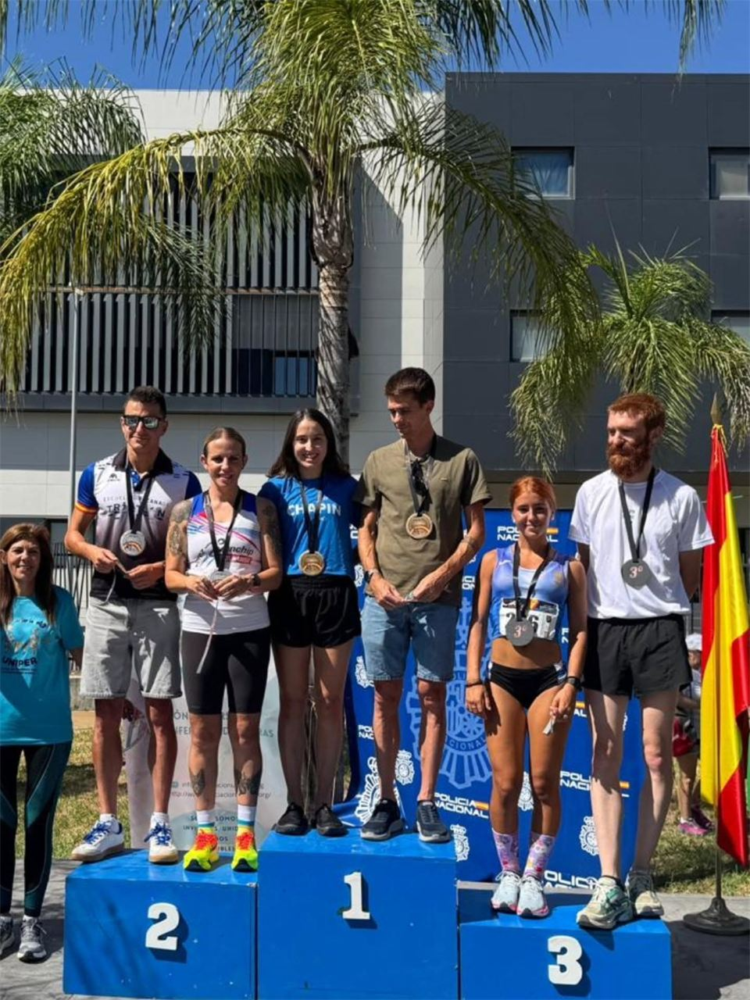
Club
No lo dudes: ven y conócenos.
No lo dudes: ven y conócenos. Escríbenos a clubatletismochapin@gmail.com o llámanos o escríbenos por WhatsApp al +34 686 40 97 24.
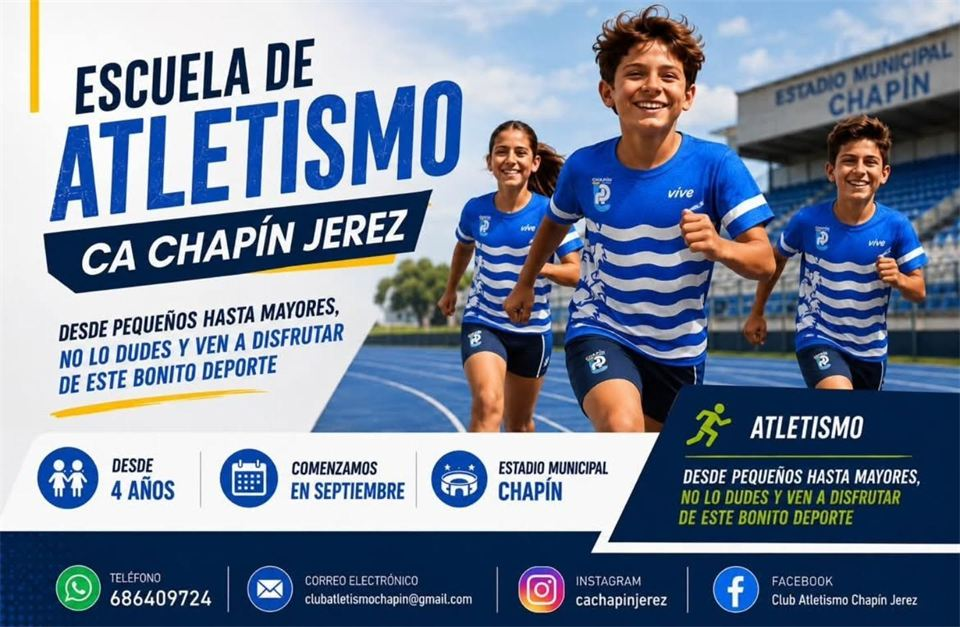
Club
Agradecemos la gran acogida que hemos vuelto a tener para seguir trabajando por el atletismo en nuestra ciudad.
Agradecemos la gran acogida que hemos vuelto a tener por vuestra parte, demostrando de nuevo la confianza en nuestro club para seguir trabajando por el atletismo en nuestra ciudad.
Os esperamos la próxima semana con más ganas y aún con el horario de verano. ¡Esto acaba de empezar y juntos volveremos a crear una gran temporada!
Entrenamientos
Recepción de nuevos atletas a las 18 horas en la puerta número 3 del Estadio Municipal de Chapín.
Desde el martes 1 de septiembre os esperamos en la puerta número 3 del Estadio Municipal de Chapín. Durante las primeras semanas de septiembre, a partir de las 18 horas, empezamos el nuevo curso.
Busca la camiseta azul y empieza a disfrutar de este bonito deporte. Recuerda: recepción de nuevos atletas a las 18 horas en la puerta número 3.
Club
Si buscas el Club Atletismo Chapín, busca la camiseta azul.
En los últimos días hemos recibido varias comunicaciones de personas interesadas en formar parte de nuestro club que nos han trasladado cierta confusión con la identidad de algunos proyectos de atletismo de nuestra ciudad. Por ello, creemos importante hacer una pequeña aclaración.
El Club Atletismo Chapín Jerez es el club de atletismo por el que muchos de vosotros nos preguntáis: un club con historia, presente y futuro en el atletismo de nuestra ciudad, que continúa creciendo cada temporada tanto en lo deportivo como en lo social. Y hay algo que nos identifica: nuestra camiseta es azul. Tenemos nuestro proyecto, nuestros atletas, nuestros entrenadores y monitores titulados, y muchas ganas de seguir creciendo, mejorando y ofreciendo cada día lo mejor de nosotros, desde los más pequeños hasta quienes buscan un compromiso competitivo.
¿Estás buscando club? Nuestro consejo es muy sencillo: ven, prueba y conócenos. Entrena con nosotros, conoce a nuestros atletas, a nuestros entrenadores y nuestra forma de trabajar, y después decide libremente si el C.A. Chapín Jerez es el lugar que buscas para ti o para tus hijos. Porque un club no se explica solamente con palabras: un club se conoce cuando formas parte de él.
Si buscas el Club Atletismo Chapín, busca la camiseta azul. C.A. Chapín Jerez: historia, trabajo, atletismo, futuro.
Club
Empieza a vivir el atletismo con nosotros: os esperamos el 1 de septiembre en Chapín.
Empieza a vivir el atletismo con nosotros: os esperamos el 1 de septiembre en Chapín. Tu club de atletismo y mucho más: entrena, aprende, disfruta y compite con nosotros.
Club
Os esperamos en septiembre con más ganas que nunca.
Os esperamos en septiembre con más ganas que nunca. Próximamente, más información; seguimos atendiendo por nuestros canales habituales. ¡Ven y disfruta con nosotros!
Competiciones
El equipo máster del club consigue el tercer puesto en el Campeonato de Andalucía de clubes máster.
El equipo máster del club consigue el tercer puesto en el Campeonato de Andalucía de clubes máster.
Competiciones
Suerte para nuestro equipo de veteranos en el fin de semana que cierra la temporada de aire libre.
Suerte para nuestro equipo de veteranos en este fin de semana, en el que cerraremos la temporada de aire libre.
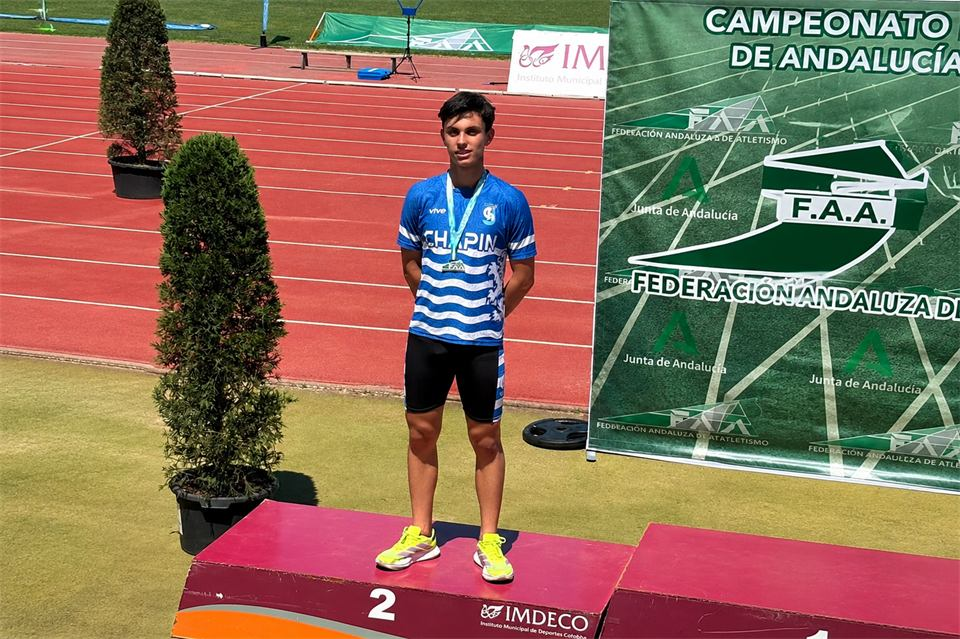
Competiciones
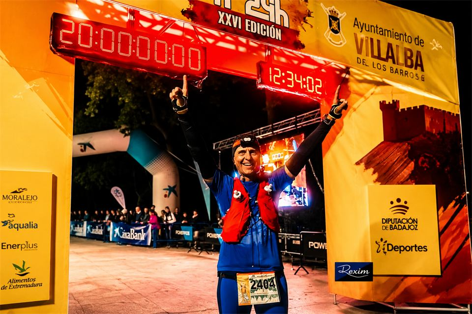
Trail running
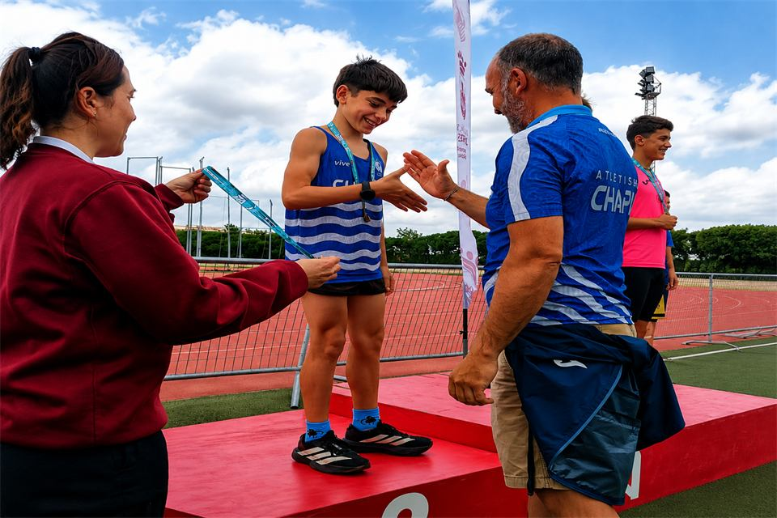
Competiciones